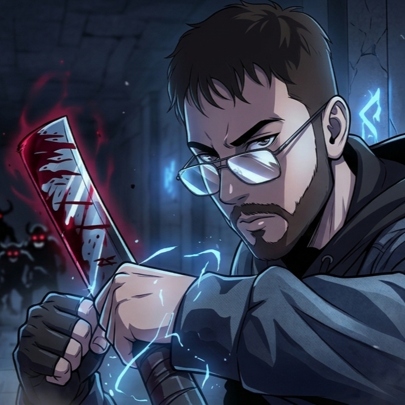
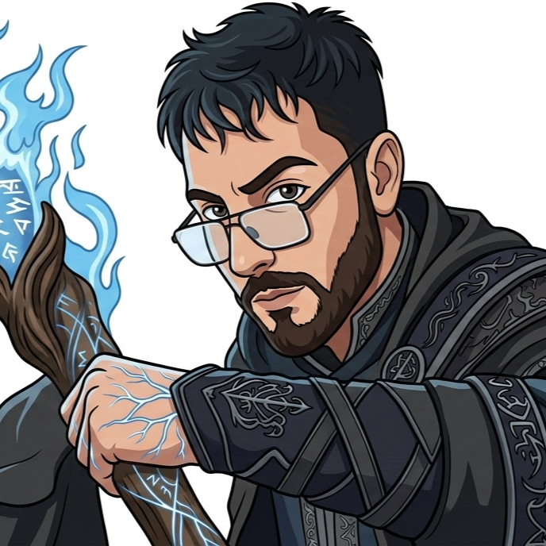
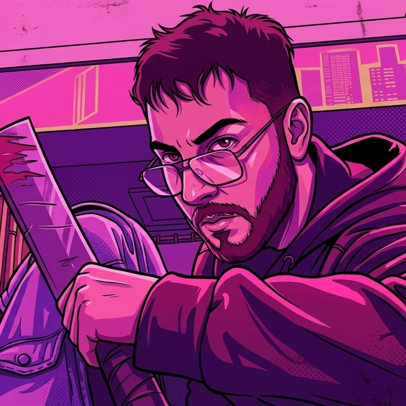
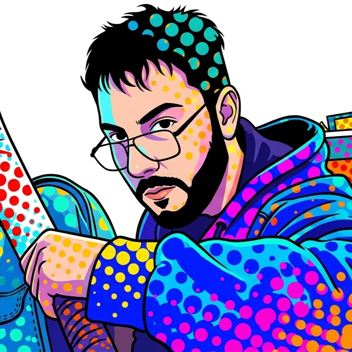
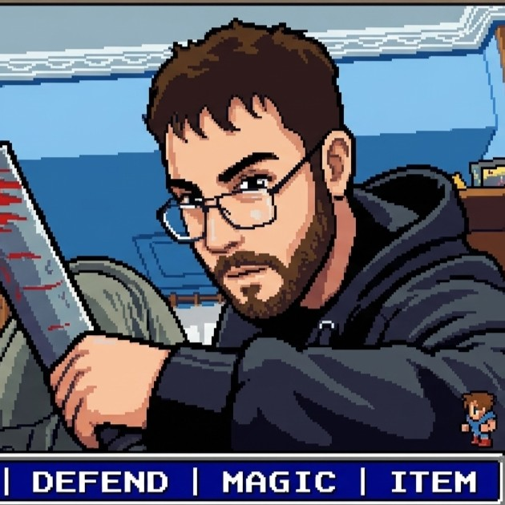
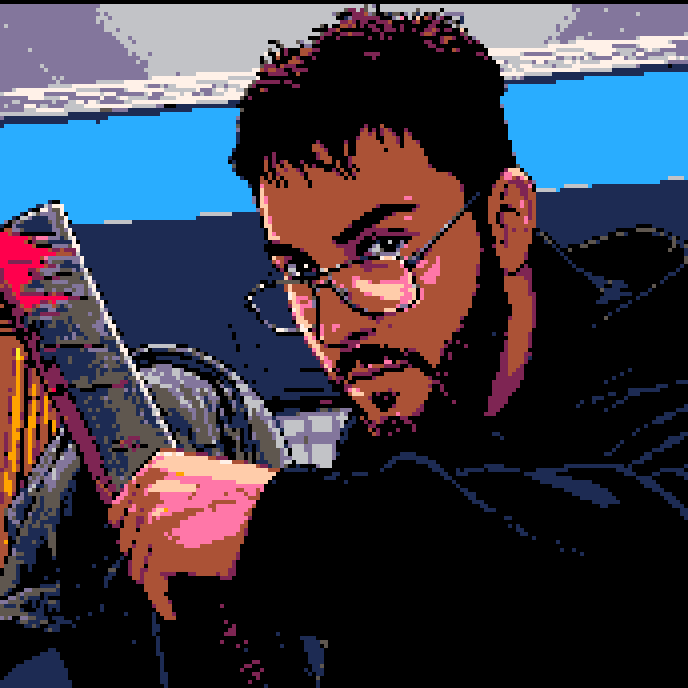

FLevelingProject
Simulador RPG de estadísticas IRL basado en la obra SOLO LEVELING con inspiraciones de RPG's Tradicionales y juegos estilo SOULS y PERSONA.
Soy un joven con pasión por el mundo de la informática y la programación. En mis tiempos libres disfruto crear proyectos web con ayuda de IA. He estudiado un GM de Sistemas y Redes y actualmente aprendo desarrollo de videojuegos en Unity.

Simulador RPG de estadísticas IRL basado en la obra SOLO LEVELING con inspiraciones de RPG's Tradicionales y juegos estilo SOULS y PERSONA.
Aplicación interactiva y lista personalizada para hacer seguimiento de tus animes preferidos de forma dinámica.

Juego de simulación estilo Tycoon donde gestionas tu propia tienda, inventario y expansión del negocio.

Proyecto experimental inspirado en las mecánicas de GTA ambientado en el entorno de Valencia.

Juego multijugador/arcade de células al estilo Agario con mecánicas dinámicas e interactividad rápida.
Recreación interactiva de terror inspirada en las mecánicas de supervivencia y cámaras de Five Nights at Freddy's.

Aventura interactiva RPG inspirada en la saga clásica de Final Fantasy y combates por turnos.

Juego de supervivencia estilo roguelite con hordas de enemigos y mejoras progresivas.